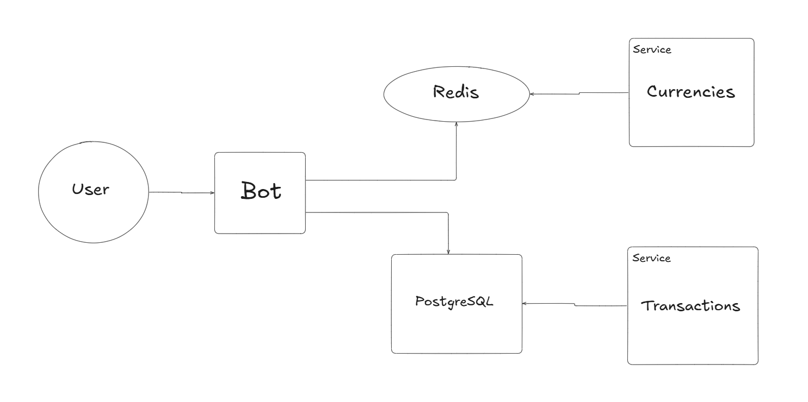

Обзор системы
Система CipherSwap построена на надёжных и высокопроизводительных компонентах, обеспечивающих стабильную работу и простоту масштабирования. Благодаря чёткой разделённости задач между сервисами, добавление нового функционала и поддержка системы не вызывают сложностей.
Компоненты системы
Bot
Основной интерфейс для взаимодействия пользователей с системой. Через бота пользователи могут:
Создавать транзакции.
Следить за статусом выполнения операций.
Бот обеспечивает удобный и безопасный способ управления обменными операциями в системе.
PostgreSQL
Главная база данных системы. В ней хранится вся ключевая информация:
Данные о транзакциях.
Информация о пользователях.
Прочие данные, необходимые для работы сервиса.
PostgreSQL обеспечивает надёжное хранение данных и высокую производительность при работе с большими объёмами информации.
Redis
In-memory база данных, используемая для хранения временной информации:
Доступные валюты.
Актуальные курсы обмена.
Данные в Redis обновляются каждые 10 секунд, получая актуальную информацию с внешних обменников. Это гарантирует точность курсов и оперативность работы сервиса.
Service Currencies
Сервис, отвечающий за загрузку данных о доступных валютах и их курсах в Redis. Его основные задачи:
Получение актуальных данных от обменников.
Обновление информации в базе Redis каждые 10 секунд.
Благодаря этому компоненту пользователи всегда видят актуальные курсы валют.
Service Transactions
Сервис, управляющий обработкой транзакций. Основные функции:
Поиск транзакций со статусом NEW и выбор оптимального обменника для выполнения операции.
Обновление статуса транзакции на HANDLED и начало её обработки.
Этот сервис обеспечивает бесперебойное выполнение всех транзакций в системе.